C-Netz
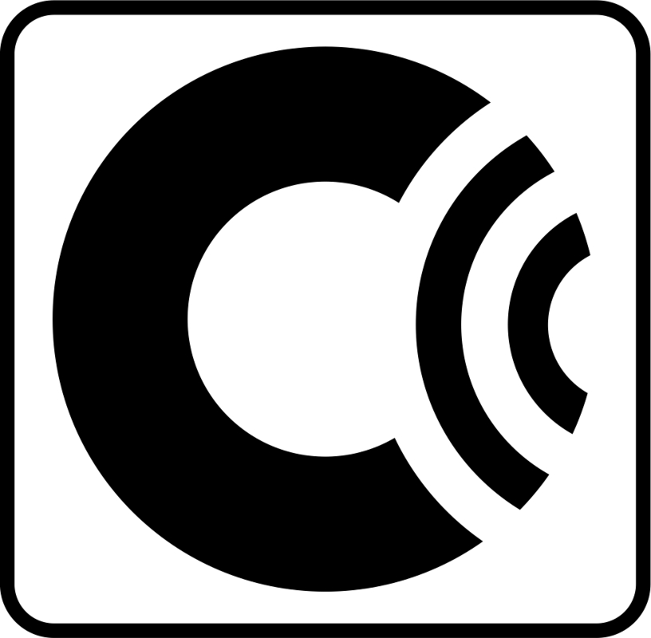
History
C-Netz was the third mobile telephone network in Germany.
It existed between 1984 (officially Mai 1985) and December 2000.
In 1989, the German Wall came down and C-Netz was quickly deployed in eastern Germany to support the congested telephone network.
It was the first cellular system in Germany, so frequencies could be used more efficiently, as it had been done in the USA with AMPS.
It offered handover capability, so moving phones could change the smaller cells during a call.
The SIM card was introduced, which is similar to GSM.
This card allowed to use phones by different subscribers with different subscriber numbers.
Authentication was used to prevent fraud, but it was used only with SIM card phones.
The magnetic cards could be cloned by receiving 'roaming update' messages.
Extra services (e. g. conditional call forwarding, answering machine) were installed in the mobile exchange.
A voice scrambler inside the phone and base station prevented eavesdropping with radio scanners.
The scrambler inverted the audio spectrum, so one cannot understand any word without de-scrambling.
Phones became smaller and portable, even hand-held phones were available.
In Germany these hand-held phones are called 'Handies'.
All phones were available under a dedicated prefix.
A caller must not know the location of the phone anymore to reach the right base station.
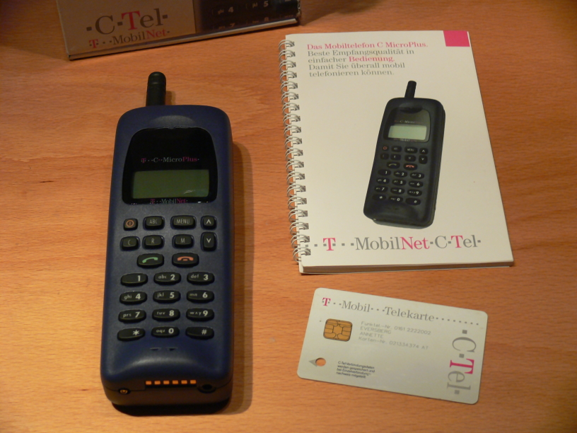
- Frequency range: 461.010 - 465.740 MHz (down-link); 451.010 - 465.740 MHz (up-link)
- Extended frequency range: 460.010 - 465.740 MHz (down-link); 450.010 - 465.740 MHz (up-link)
- 222 voice channels
- 237 voice channels since Mai 1988
- 287 voice channels since September 1989
- 1 organization channel (call setup and paging)
- Duplex distance: 10 MHz
- Channel spacing: 10 KHz and optionally 12.5 KHz
- Voice modulation: FM
- Signaling modulation: carrier FSK
- Frequency deviation: 2.5 KHz (FSK); 4 KHz (Voice)
- Mobile station transmit power: 50 mW up to 15 Watts
- Base station transmit power: 25 Watts
- Features: Speech Compandor, Audio scrambling
How it works
Like AMPS (Advanced Mobile Phone Service), the C-Netz is a cellular network.
Smaller cells allowed more calls to be made with same amount of radio channels.
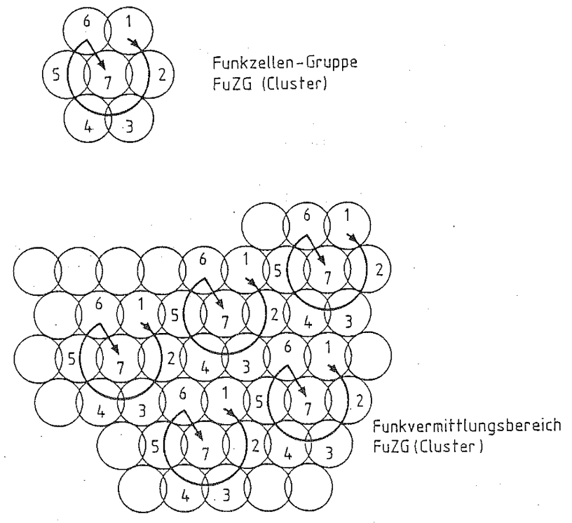
Base stations are grouped into clusters.
Each cluster is made of around 7 base stations.
Each base station in a cluster must have different channels.
As depicted, the channels of a base station marked with "1" can be re-used in other clusters that is marked "1" also.
To handle more calls with the same amount of channels, the size of a cell was reduced in highly populated areas.
By using small cell structure, it was likely to loose radio link while calling and moving at the same time.
To prevent loss of radio link while moving too far away from a cell, handover to stronger or closer cell is performed.
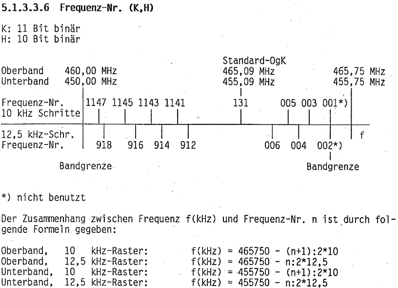
Two frequency bands are used, one for up-link and one down-link.
Only one exception is the control channel #131 ('Orgakanal').
It is the same channels for all base stations.
To avoid collisions, the channel is divided into time slots.
The time slots are re-used in the same way as channels are re-used in other clusters.
This reduces the number of channels for call setup and paging to only one single channel.
The mobile phone does not have to search for a valid control channel first, it just has to tune to channel 131.
Also it is possible to have a dedicated control channel for cells in high traffic areas.
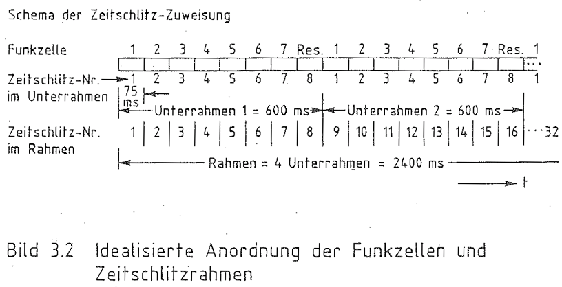
As depicted, the base station and mobile station use one or more time slots on the control channel.
Generally, every 8th time slot was used and is used by this project.
The base station transmits every 600ms in this case.
The mobile phone transmits two time slots later, if required.
Every time slot contains two message blocks.
One block is used for call setup.
The other block is used for periodic check, if the phone is still available.
Message blocks have 70 bits.
The first 6 bits define the message type.
The other 64 bits are information elements, depend on the message type.
The 70 bits are grouped into 10 words of 7 bits each.
Each word gets additional 8 bits redundancy from a BCH code.
The redundancy allows to correct up to two bit errors in a word.
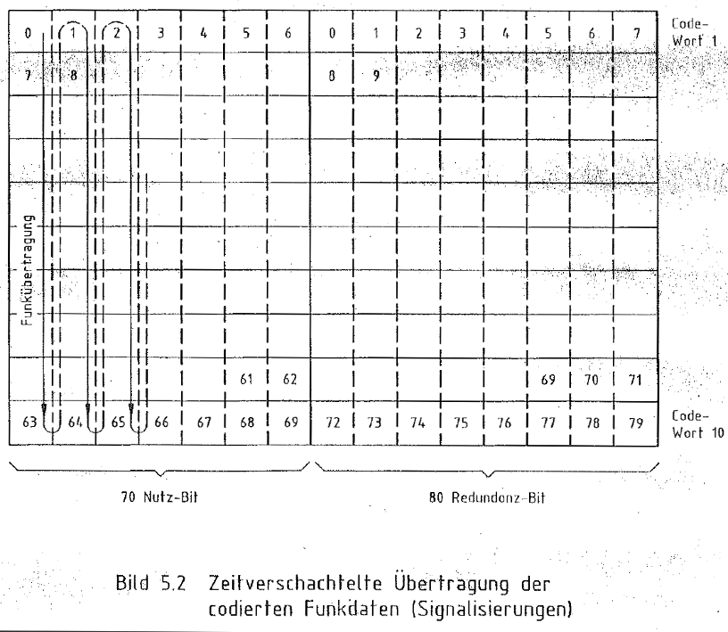
To correct burst errors (up to 20 bits), the bits are interleaved before transmitted.
As depicted above, the first bit of all words are transmitted first, then the next bit and so on.
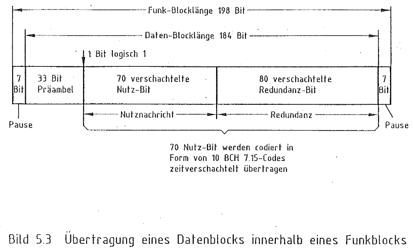
A sync word of 11 bits is added in front of each message three times, followed by one unused bit.
Additional 14 guard bits are used to allow the transmitter to ramp up and down RF power between time slots.
This gives a total of 198 bits per message and a duration of 37.5 ms.
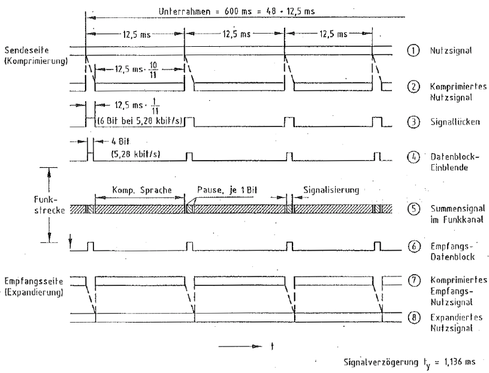
Also message blocks are transmitted during voice conversation.
The blocks are used to terminate the call, perform handover, measure link or transmit metering information.
4 bits of the message is transmitted every 12.5 ms. After 600 ms, the complete frame is transmitted.
To remove the 4 bits from audio stream, the voice is time compressed (speed up) to 10/11th.
The 4 bits + 2 guard bits are inserted in the gap between voice chunks.
On the receiving end, the voice chunks are expanded again.
The phone will keep in sync with the voice chunks by keeping the decoder in sync with the received message bits.
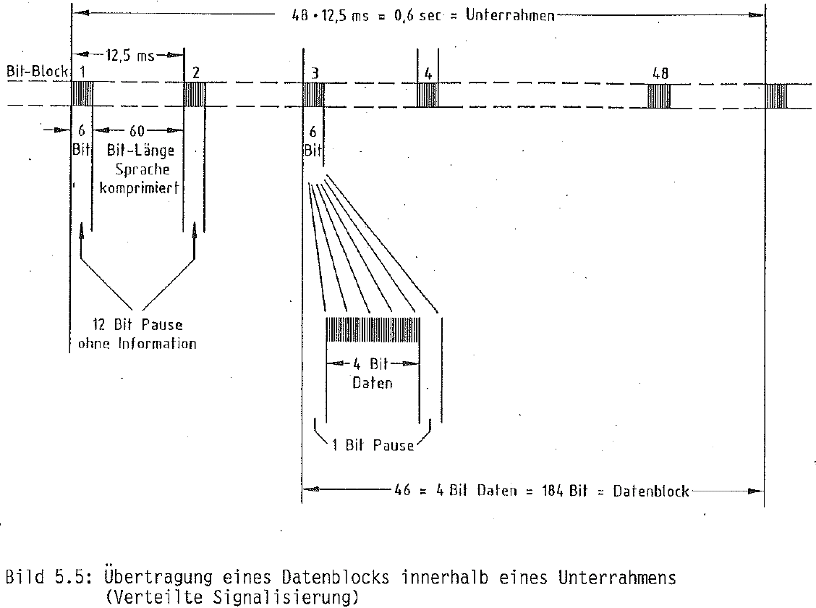
The audio level at the end of one voice chunk may not match the level at the beginning of the next chunk.
This offset must be removed by the receiver using a filter.
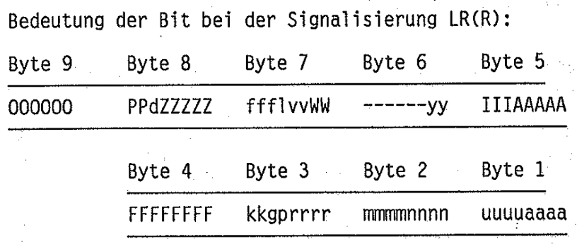
This is an example of a broadcast message by a base station on the control channel.
The message type 'O' (letter o) is "100111", so this message block contains cell and access information.
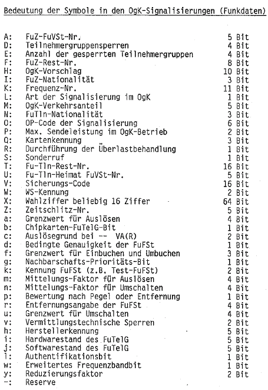
The location of parameters inside a message (information elements) are shown by letters.
Each letter is a different information element as depicted above.

The first thing a phone does is looking for the strongest cell.
The phone accesses the cell by transmitting a location update message.
The cell acknowledges or rejects the phone.
The call setup is depicted above.
The mobile phone transmits a message that it wishes to make a normal call or emergency call.
If the channel is available, the base station requests the dialed number from the phone.
The phone transmits the dialed number.
If the number is ok, the base station acknowledges the dialed number.
After a voice channel is allocated, the base station orders the phone to change to that channel two time slots later.
On this voice channel, the mobile phone and the base station transmit 8 messages to prove quality of channel.
Messages VH1 and VHK are transmitted while the call is set up.
Then the phone is ordered to switch to voice conversation.
All following messages are then transmitted between the voice chunks.
To reduce radio noise, a syllabic compandor is used on both ends.
This compresses the audio level dynamics by 2.
An audio level of 25% is raised to 50% by the compressor and lowered to 25% by the expander.
A radio noise floor of 10% would be reduced to 1% this way.
Scrambling is used to prevent eavesdropping with radio scanners.
The audio spectrum of 300 - 3300 Hz is inverted by mirroring frequencies about 1650 Hz at the transmitter.
(1000 Hz becomes 2300 Hz and vice versa.)
The receiver mirrors again to unscramble audio.
To scramble audio efficiently, a carrier frequency of 3300 Hz is amplitude modulated (multiplied) by the audio signal.
The result is a shifted spectrum above 3300 Hz and a mirrored spectrum below 3300 Hz.
The spectrum above 3300 Hz is filtered out, so the mirrored spectrum remains.
See the German description from Handbuch von Josef Kedaj / Günther Hentschel for more informations.
Setup of a base station
When I first started testing my early C-Netz implementation, I had great trouble getting a response from any mobile phone.
The main problem was clock speed of the transmitted signal.
In the real network, the base stations were all synchronized with a high precision clock.
All base stations transmit on the same control channel 131 ('Orgakanal'), but at different time slots.
The phone expects that the time slots repeat precisely every 2.4 seconds.
The specification say that the mobile phone requires clock speed deviation of +- 1 PPM (Parts Per Million) or less.
To comply with the specs, the base stations needs to have a clock deviation far below 1 PPM.
(I guess that there is a tolerance, so maybe a few PPM deviation would make no big problem.)
We need to calibrate the speed of our transmit signal (and receive signal as well).
Importaint: We need calibrate the signal processing clock!
First of all we need a reference clock.
Since most computers have standard crystal clocks, we cannot use our system clock without any help.
I decided to use the help of the NTP daemon.
After running my system for several days (5 days), the clock speed was accurate enough for a base station.
Be sure to choose a place for your PC with constant temperature.
A room inside a building is sufficient.
In /etc/ntp.conf define one or more NTP servers to get the time from. I use the German atom clock of the PTB:
server ntp1.ptb.de
server ntp2.ptb.de
server ntp3.ptb.de
This clock provides time base for European radio clocks and most German clocks.
It accurate enough for this project, so please use this clock for my project.
netbook ~ # ntptime
ntp_gettime() returns code 0 (OK)
time dad971f1.9e1b5c44 Sun, May 8 2016 10:06:09.617, (.617605507),
maximum error 238951 us, estimated error 199 us, TAI offset 0
ntp_adjtime() returns code 0 (OK)
modes 0x0 (),
offset 425.797 us, frequency 15.796 ppm, interval 1 s,
maximum error 238951 us, estimated error 199 us,
status 0x2001 (PLL,NANO),
time constant 10, precision 0.001 us, tolerance 500 ppm,
One notices that I have quite an low precision crystal in my test machine.
Since I have NTP running for at least 5 days, the system clock is now far below 1 PPM.
The second problem is the clock of our sound adapter.
They use own crystals that are also not accurate.
Because they are made for audio signals (and not for high precise base stations), they can't be used without calibration.
Cheap USB adapters may even have different clocks on TX and RX.
Be sure to use no extension cables for USB sound adapters, since the voltage may drop undefined and so the clock speed will change.
Since we have precise system clock now (thanx to NTP), we can measure the speed difference of our sound adapter.
Later we will use the measurement result to adjust our signal processor, so the signal clock is below 1 ppm.
Be sure to have your machine running for at least 5 to 7 days (with your sound adapter attached, in case you have USB sound adapter).
The machine must have network connection to the NTP server.
I suggest to use 'ntp1.ptb.de' and 'ntp2.ptb.de' as reference.
Use other servers if you are sure that the source is an atomic clock.
Use command line option '-M' or '--measure' to measure my sound adapter.
Let it run for one hour.
# src/cnetz/cnetz -k 131 -M
...
dsp.c:218 notice : Clock: RX=4.75 TX=36.84; Signal: RX=135.38 TX=-378.58 ppm
dsp.c:218 notice : Clock: RX=10.61 TX=31.09; Signal: RX=135.38 TX=-378.58 ppm
dsp.c:218 notice : Clock: RX=3.01 TX=26.55; Signal: RX=135.38 TX=-378.58 ppm
...
dsp.c:218 notice : Clock: RX=19.46 TX=19.45; Signal: RX=19.39 TX=19.42 ppm
dsp.c:218 notice : Clock: RX=19.45 TX=19.50; Signal: RX=19.39 TX=19.42 ppm
dsp.c:218 notice : Clock: RX=19.48 TX=19.47; Signal: RX=19.39 TX=19.42 ppm
dsp.c:218 notice : Clock: RX=19.44 TX=19.44; Signal: RX=19.35 TX=19.43 ppm
dsp.c:218 notice : Clock: RX=19.44 TX=19.49; Signal: RX=19.35 TX=19.43 ppm
One can see that the measured clock from the sound card (sample rate) differs about +19.45 PPM.
Because I did not do any correction to the signal processing, the same error applies to the signal processing.
Use command line option '-C 19.45,19.45' or '--clock-speed 19.45,19.45' to compensate the clock error by adjusting the signal processor.
Let it run again for one hour and you will see that clock deviation of the signal is below 1 PPM.
Importaint: We need to connect to PLL and discriminator!
C-Netz does not use a modulated tone to carry bits of information, instead it modulates the radio carrier directly.
This image shows the demodulated signal from a receiver:
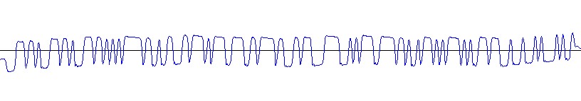
Generally a receiver will do de-emphasis and filtering after demodulating the signal.
We don't want that.
It may work, but be sure to use a receiver with discriminator output.
This output gives direct signal of the frequency deviation of the received signal.
The signal on the sound card represents the frequency shift of the received signal.
Many receivers can be modified, so search the Web for more info.
On the transmitter we don't want to have filtering and pre-emphasis.
It may work, but be sure to use a transmitter that allows to disable emphasis.
I took the schematics of my transmitter and connected the sound card directly to the PLL.
The transmitter will now shift frequency according the the level of the sound card.
Importaint: We need to transmit correct polarity! Always use 'auto' (default) to automatically detect the correct polarity.
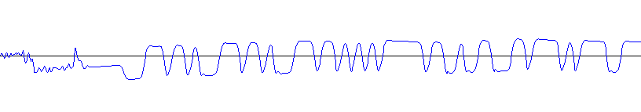
C-Netz uses FSK (Frequency Shift Keying) by directly modulating the carrier frequency, rather than modulating a tone.
The advantage is much higher data rate.
The base station's carrier frequency is raised by 2.5 KHz to transmit a logical "1" and lowered by 2.5 KHz to transmit a logial "0".
(The mobile station transmits reversed polarity.)
The mobile station will only decode signals with the correct polarity.
The three sync words of "11100010010", is shown in the picture above.
In the picture above, the polarity is wrong.
(The logical "1" points down and the logical "0" points up.)
To change transmitted polarity, use command line option '-F yes|no|auto' or '--flip-polarity yes|no|auto'.
(Note: don't confuse with '-P'!)
The 'auto' option (default) will generate a signal of two base stations.
If we don't know the polarity of our sound card or transmitter, this helps to detect the right polarity.
Since we have time division multiplex on the main control channel, we can transmit a second base station by using different time slots.
The second base station uses reversed polarity, so there is one base station with correct and one with wrong polarity.
The two base stations have different time slots and different IDs.
If a first registration message is received from the mobile phone, the software checks to which base station this response belongs to.
Then we found the correct polarity and turn off the base station with the wrong polarity.
The decoder itself does not care about what polarity it receives from the mobile station.
We don't need to know the polarity of the receiver or the sound card's input.
The software just checks for sync words with both possible polarities and chooses right polarity automatically.
I have a transmitter and a receiver without emphasis, my sound card has a clock error of about 19.2 PPM.
To run the base station I the following command line options:
# cnetz -k 131 -p -d -C 19.25,19.25
...
cnetz.c:142 notice : You selected channel 131 ('Orga-Kanal') for combined callin
g + traffic channel. Some phones will reject this.
dsp.c:96 info : Using clock speed of 19.2 ppm (RX) and 19.2 ppm (TX) to correc
t sound card's clock.
cnetz.c:274 info : Entering IDLE state on channel 131.
Base station on channel 131 ready, please tune transmitter to 465.090 MHz and re
ceiver to 455.090 MHz.
The software complains about using control channel 131 for voice traffic too.
This is the easiest way to use a single transmitter and receiver without switching.
But this is not compliant, so especially newer phone will reject this, like the Nokia C130.
Old phones like BSA, Storno or Phillips phones don't care.
When we make a call and another phone is registered, the other phone will loose coverage when the software switches from control channel to traffic channel.
After the call has been terminated, the control channel is restored and the other phone re-registers again.
You should tune the receiver to 465.090 first, to check if you can hear and decode the idle signal from the base station.
Then tune to actually up-link frequency 455.090 MHz.
The actual level is not yet relevant.
(You may check the quality using '-l 2' or '--loopback 2' command line option and build a radio loop by tuning the receiver to the transmitter.)
Now power up a phone.
Depending on your card reader, insert chip or magnetic card.
Hopefully you get a response from the phone.
If it responds, you will hear a short burs on receiver.
This bursts is just 37.5 ms long and sounds a bit less noisy than the noise floor.
If the burst is received and correctly decoded, the base station knows the transmitter's polarity and selects it.
telegramm.c:1486 info : RX Level: 96% Jitter: 0.04 Sync Time: 3968.18 (TS 10.02) POSITIVE
***********************************************
*** Autoselecting positive FSK TX polarity! ***
***********************************************
cnetz.c:895 info : Received Attachment 'Einbuchen' message from Subscriber '6215784' with chip card's security code 11029
transaction.c:208 info : Transaction state IDLE -> EM
transaction.c:70 info : Created transaction for subscriber '6215784'
database.c:117 info : Adding subscriber '6,2,15784' to database.
database.c:121 info : Subscriber '6,2,15784' busy now.
cnetz.c:709 notice : Frame sync offset = 800.18, correcting!
cnetz.c:760 info : Sending acknowledgement 'Einbuchquittung' to Attachment request.
database.c:124 info : Subscriber '6,2,15784' idle now.
transaction.c:89 info : Destroying transaction for subscriber '6215784'
transaction.c:208 info : Transaction state EM -> IDLE
Level adjustment:
We see a receive level of around 96%.
This is already good, since I did the adjustment previously.
Tune your receiver to the up-link frequency, so you get loop-back of base station broadcast.
Use the variable resistor (connecting your transmitter) to adjust the volume until the received level matches the same level of your previously received message.
In my case I adjust the transmitter to match around 96%. (+- 10% is good)
Now, whatever frequency deviation the phone transmits for signaling, so does your base station.
Use the other variable resistor (connecting your receiver) to adjust the volume until the level matches about 100%. (+- 10% is good)
Switch back the receiver to up-link frequency and restart the phone.
After some time (1 minute) the base station will check, if the phone is still available.
It transmits a request (MA) to the phone.
The phone answers to the request (MFT):
telegramm.c:1473 info : Ignoring mysterious unmodulated telegramm (noise from phone's transmitter)
database.c:72 info : Check, if subscriber '6,2,15784' is still available.
transaction.c:208 info : Transaction state IDLE -> MA
transaction.c:70 info : Created transaction for subscriber '6215784'
database.c:121 info : Subscriber '6,2,15784' busy now.
cnetz.c:863 info : Sending keepalive request 'Meldeaufruf'
transaction.c:208 info : Transaction state MA -> MFT
telegramm.c:1486 info : RX Level: 96% Jitter: 0.02 Sync Time: 6534.01 (TS 16.50) POSITIVE
cnetz.c:969 info : Received acknowledge 'Meldung Funktelefonteilnehmer' message from Subscriber '6215784'
database.c:124 info : Subscriber '6,2,15784' idle now.
transaction.c:89 info : Destroying transaction for subscriber '6215784'
transaction.c:208 info : Transaction state MFT -> IDLE
To make a call from the mobile phone to the base station, just enter some digits at the mobile phone and press the dial button.
The phone requests a call (VWG).
The base station requests dialed number (WAF).
The phone transmits dialed number (WUE).
The base station acknowledges the call (WBP) and then orders the phone to switch to speech channel (VAG).
Then measurement and through connection of speech takes place:
telegramm.c:1486 info : RX Level: 96% Jitter: 0.04 Sync Time: 12671.99 (TS 32.00) POSITIVE
cnetz.c:931 info : Received outgoing Call 'Verbindungswunsch gehend' message from Subscriber '6215784'
transaction.c:208 info : Transaction state IDLE -> VWG
transaction.c:70 info : Created transaction for subscriber '6215784'
database.c:121 info : Subscriber '6,2,15784' busy now.
cnetz.c:854 info : Sending acknowledgement 'Wahlaufforderung' to outging call
transaction.c:208 info : Transaction state VWG -> WAF
telegramm.c:1486 info : RX Level: 95% Jitter: 0.04 Sync Time: 3366.02 (TS 8.50) POSITIVE
cnetz.c:957 info : Received dialing digits 'Wahluebertragung' message from Subscriber '6215784' to Number '02123839349'
transaction.c:208 info : Transaction state WAF -> WBP
cnetz.c:782 info : Sending call accept 'Wahlbestaetigung positiv'.
transaction.c:208 info : Transaction state WBP -> VAG
cnetz.c:789 info : Sending channel assignment 'Verbindungsaufbau gehend'.
transaction.c:208 info : Transaction state VAG -> BQ
cnetz.c:807 info : Staying on combined calling + traffic channel 131
dsp.c:641 info : Switching channel (mode)
cnetz.c:1014 info : Sending 'Belegungsquittung' on traffic channel
cnetz.c:1014 info : Sending 'Belegungsquittung' on traffic channel
cnetz.c:1014 info : Sending 'Belegungsquittung' on traffic channel
telegramm.c:1486 info : RX Level: 96% Jitter: 0.02 Sync Time: 9504.02 (TS 24.00) POSITIVE
cnetz.c:1118 info : Received allocation 'Belegung' message.
cnetz.c:1014 info : Sending 'Belegungsquittung' on traffic channel
telegramm.c:1486 info : RX Level: 96% Jitter: 0.02 Sync Time: 9701.99 (TS 24.50) POSITIVE
cnetz.c:1118 info : Received allocation 'Belegung' message.
...
transaction.c:208 info : Transaction state BQ -> VHQ
telegramm.c:1486 info : RX Level: 96% Jitter: 0.03 Sync Time: 10494.00 (TS 26.50) POSITIVE
cnetz.c:1118 info : Received allocation 'Belegung' message.
cnetz.c:1024 info : Sending 'Quittung Verbindung halten' on traffic channel
telegramm.c:1486 info : RX Level: 96% Jitter: 0.03 Sync Time: 10691.98 (TS 27.00) POSITIVE
cnetz.c:1118 info : Received allocation 'Belegung' message.
...
call.c:623 info : Incoming call from '6215784' to '02123839349'
transaction.c:208 info : Transaction state VHQ -> DS
telegramm.c:1486 info : RX Level: 96% Jitter: 0.02 Sync Time: 11286.00 (TS 28.50) POSITIVE
cnetz.c:1145 info : Received connection hold 'Verbindung halten' message.
cnetz.c:1051 info : Sending 'Durchschalten' on traffic channel
telegramm.c:1486 info : RX Level: 96% Jitter: 0.03 Sync Time: 11483.99 (TS 29.00) POSITIVE
cnetz.c:1145 info : Received connection hold 'Verbindung halten' message.
...
telegramm.c:1486 info : RX Level: 96% Jitter: 0.03 Sync Time: 12276.00 (TS 31.00) POSITIVE
cnetz.c:1131 info : Received assignment confirm 'Durchschaltung Quittung' message.
cnetz.c:1051 info : Sending 'Durchschalten' on traffic channel
telegramm.c:1486 info : RX Level: 97% Jitter: 0.02 Sync Time: 12474.01 (TS 31.50) POSITIVE
cnetz.c:1131 info : Received assignment confirm 'Durchschaltung Quittung' message.
...
transaction.c:208 info : Transaction state DS -> VHQ
telegramm.c:1486 info : RX Level: 96% Jitter: 0.03 Sync Time: 1781.99 (TS 4.50) POSITIVE
cnetz.c:1131 info : Received assignment confirm 'Durchschaltung Quittung' message.
dsp.c:641 info : Switching channel (mode)
cnetz.c:1238 info : Sending 'Quittung Verbindung halten' on traffic channel
cnetz.c:1238 info : Sending 'Quittung Verbindung halten' on traffic channel
cnetz.c:1238 info : Sending 'Quittung Verbindung halten' on traffic channel
telegramm.c:1486 info : RX Level: 97% Jitter: 0.07 Sync Time: 5544.05 (TS 14.00) POSITIVE
cnetz.c:1286 info : Received supervisory frame 'Verbindung halten' message.
cnetz.c:1238 info : Sending 'Quittung Verbindung halten' on traffic channel
telegramm.c:1486 info : RX Level: 97% Jitter: 0.07 Sync Time: 8712.02 (TS 22.00) POSITIVE
cnetz.c:1286 info : Received supervisory frame 'Verbindung halten' message.
cnetz.c:1238 info : Sending 'Quittung Verbindung halten' on traffic channel
telegramm.c:1486 info : RX Level: 97% Jitter: 0.09 Sync Time: 11880.04 (TS 30.00) POSITIVE
cnetz.c:1286 info : Received supervisory frame 'Verbindung halten' message.
cnetz.c:1238 info : Sending 'Quittung Verbindung halten' on traffic channel
...
To call to the mobile phone, enter the mobile station's ID and press 'd' for dial.
If the phone is attached, the base station orders the phone to switch to speech channel (VAK).
The rest is similar to incoming calls, except the the phone has to answer before the speech is through-connected:
call.c:490 info : Outgoing call to 6215784
cnetz.c:416 info : Call to mobile station, paging station id '6215784'
transaction.c:208 info : Transaction state IDLE -> VAK
transaction.c:70 info : Created transaction for subscriber '6215784'
database.c:121 info : Subscriber '6,2,15784' busy now.
cnetz.c:792 info : Sending channel assignment 'Verbindungsaufbau kommend'.
transaction.c:208 info : Transaction state VAK -> BQ
cnetz.c:807 info : Staying on combined calling + traffic channel 131
dsp.c:641 info : Switching channel (mode)
cnetz.c:1014 info : Sending 'Belegungsquittung' on traffic channel
cnetz.c:1014 info : Sending 'Belegungsquittung' on traffic channel
cnetz.c:1014 info : Sending 'Belegungsquittung' on traffic channel
telegramm.c:1486 info : RX Level: 96% Jitter: 0.03 Sync Time: 6335.99 (TS 16.00) POSITIVE
cnetz.c:1118 info : Received allocation 'Belegung' message.
cnetz.c:1014 info : Sending 'Belegungsquittung' on traffic channel
telegramm.c:1486 info : RX Level: 95% Jitter: 0.03 Sync Time: 6534.06 (TS 16.50) POSITIVE
cnetz.c:1118 info : Received allocation 'Belegung' message.
When the mobile phone is hung up, it sends the AT message.
The base station responds with AF message and switches back to control channel.
telegramm.c:1486 info : RX Level: 97% Jitter: 0.06 Sync Time: 11880.01 (TS 30.00) POSITIVE
cnetz.c:1286 info : Received supervisory frame 'Verbindung halten' message.
cnetz.c:1238 info : Sending 'Quittung Verbindung halten' on traffic channel
telegramm.c:1486 info : RX Level: 97% Jitter: 0.06 Sync Time: 2375.99 (TS 6.00) POSITIVE
cnetz.c:1297 info : Received release frame 'Ausloesen durch FuTln' message.
transaction.c:208 info : Transaction state VHQ -> AT
call.c:744 info : Call has been released with cause=16
cnetz.c:1253 info : Sending 'Auslosen durch FuTln' on traffic channel
database.c:124 info : Subscriber '6,2,15784' idle now.
transaction.c:89 info : Destroying transaction for subscriber '6215784'
transaction.c:208 info : Transaction state AT -> IDLE
cnetz.c:274 info : Entering IDLE state on channel 131.
telegramm.c:1486 info : RX Level: 96% Jitter: 0.06 Sync Time: 5543.98 (TS 14.00) POSITIVE
dsp.c:641 info : Switching channel (mode)
telegramm.c:1484 info : RX Level: 97% Jitter: 0.08 Sync Time: 9333.99 (TS 23.57) Bit errors: 6 POSITIVE
telegramm.c:1525 notice : Received Telegramm that is not used OgK channel signaling, ignoring! (opcode 22 = AT(V))
[Back to main page]
|